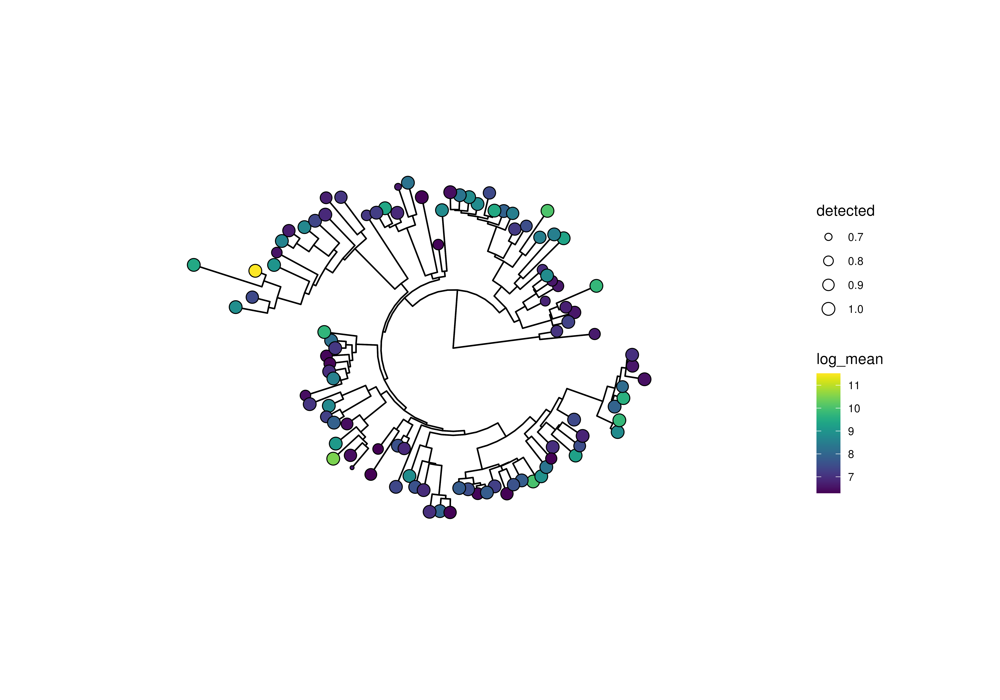
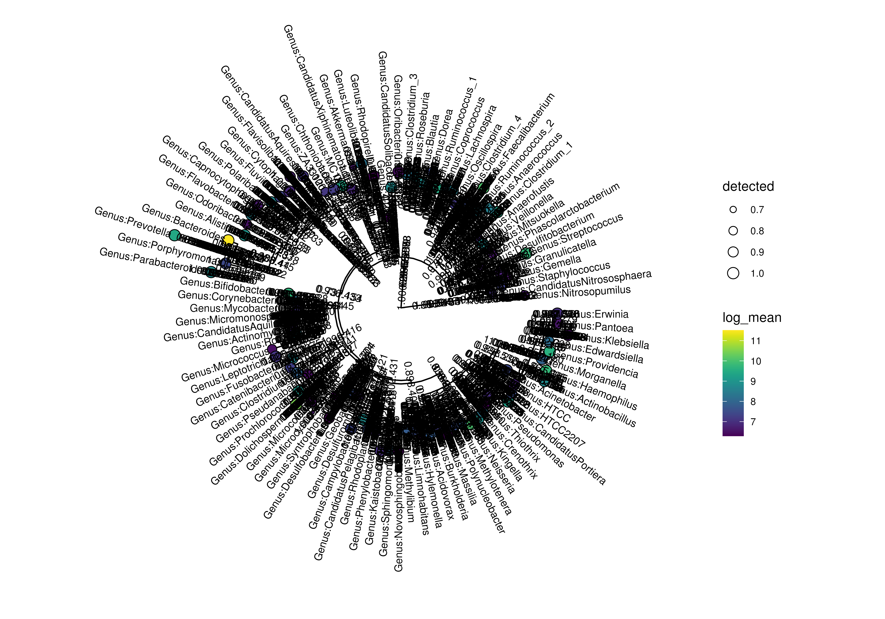
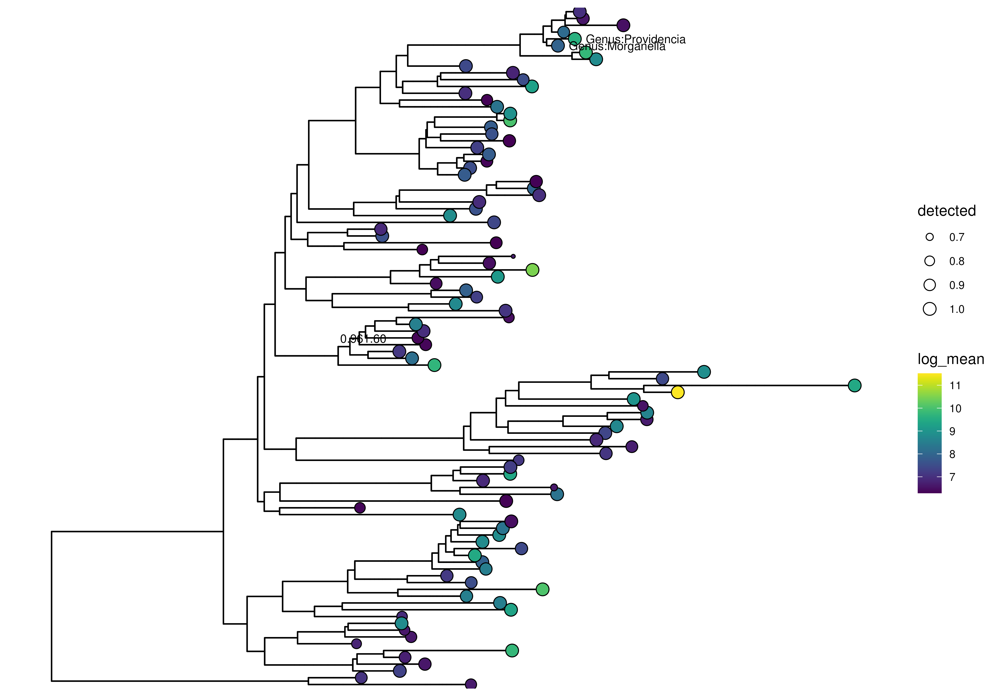
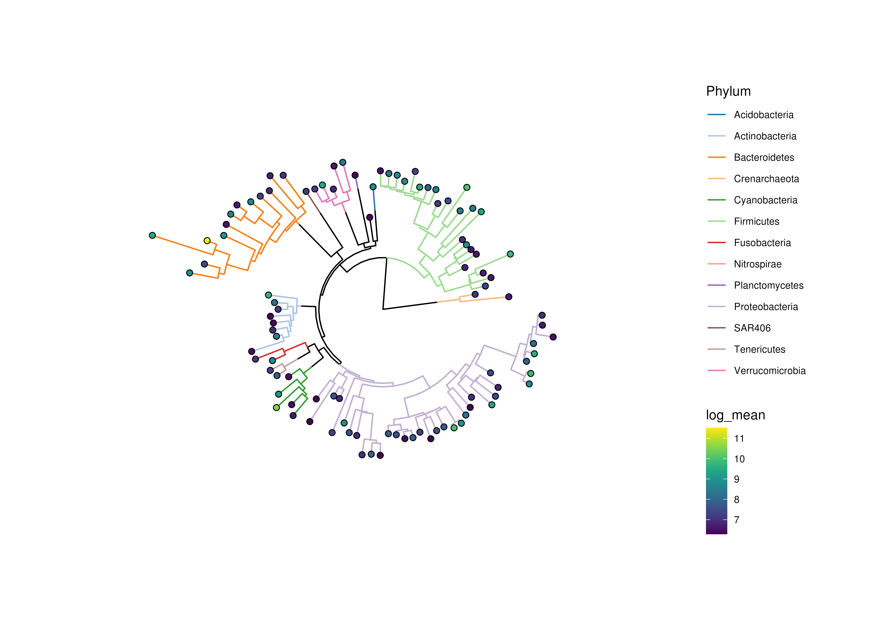
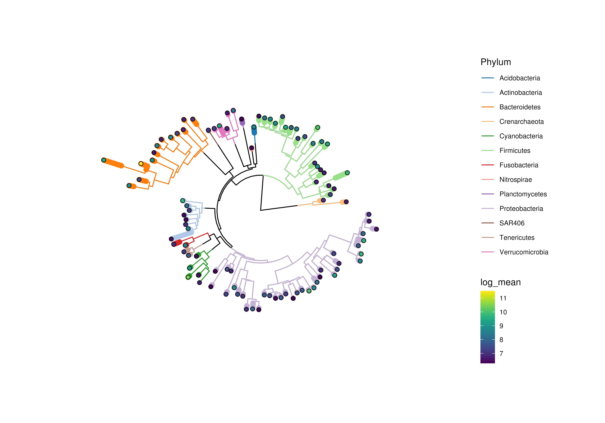

plotTree.RdBased on the stored data in a TreeSummarizedExperiment a tree can
be plotted. From the rowData, the assays as well as the
colData information can be taken for enriching the tree plots with
additional information.
plotRowTree(object, ...) plotColTree(object, ...) # S4 method for TreeSummarizedExperiment plotColTree( object, relabel_tree = FALSE, show_label = FALSE, show_highlights = FALSE, colour_highlights = FALSE, add_legend = TRUE, layout = "circular", edge_colour_by = NULL, edge_size_by = NULL, tip_colour_by = NULL, tip_shape_by = NULL, tip_size_by = NULL, node_colour_by = NULL, node_shape_by = NULL, node_size_by = NULL, by_exprs_values = "counts", other_fields = list(), ... ) # S4 method for TreeSummarizedExperiment plotRowTree( object, relabel_tree = FALSE, show_label = FALSE, show_highlights = FALSE, colour_highlights = FALSE, add_legend = TRUE, layout = "circular", edge_colour_by = NULL, edge_size_by = NULL, tip_colour_by = NULL, tip_shape_by = NULL, tip_size_by = NULL, node_colour_by = NULL, node_shape_by = NULL, node_size_by = NULL, by_exprs_values = "counts", other_fields = list(), ... )
| object | a
|
|---|---|
| ... | additional arguments for plotting. |
| relabel_tree | logical scalar, Should the tip labels be relabeled using
the output of |
| show_label | logical scalar or character vector. Should tip labels
be plotted or if a logical vector is provided, which labels should be
shown? Only values corresponding to actual labels will be plotted.
(default: |
| show_highlights | logical scalar or character vector. Should highlights
around nodes and its decendents be plotted? If set |
| colour_highlights | Should the highlights be colour differently?
If |
| add_legend | logical scalar. Should legends be plotted?
(default: |
| layout | layout for the plotted tree. See
|
| edge_colour_by | Specification of a column metadata field or a feature
to colour tree edges by, see the by argument in
|
| edge_size_by | Specification of a column metadata field or a feature
to size tree edges by, see the by argument in
|
| tip_colour_by | Specification of a column metadata field or a feature to
colour tree tips by, see the by argument in
|
| tip_shape_by | Specification of a column metadata field or a feature to
shape tree tips by, see the by argument in
|
| tip_size_by | Specification of a column metadata field or a feature to
size tree tips by, see the by argument in
|
| node_colour_by | Specification of a column metadata field or a feature to
colour tree nodes by. Must be a field from |
| node_shape_by | Specification of a column metadata field or a feature to
shape tree nodes by. Must be a field from |
| node_size_by | Specification of a column metadata field or a feature to
size tree nodes by. Must be a field from |
| by_exprs_values | A string or integer scalar specifying which assay to
obtain expression values from, for use in point aesthetics - see the
|
| other_fields | a |
a ggtree plot
library(scater) library(mia) # preparation of some data data(GlobalPatterns) altExps(GlobalPatterns) <- splitByRanks(GlobalPatterns) altExp(GlobalPatterns,"Genus") <- addPerFeatureQC(altExp(GlobalPatterns,"Genus")) rowData(altExp(GlobalPatterns,"Genus"))$log_mean <- log(rowData(altExp(GlobalPatterns,"Genus"))$mean) rowData(altExp(GlobalPatterns,"Genus"))$detected <- rowData(altExp(GlobalPatterns,"Genus"))$detected / 100 top_genus <- getTopTaxa(altExp(GlobalPatterns,"Genus"), method="mean", top=100L, abund_values="counts") # x <- altExp(GlobalPatterns,"Genus") plotRowTree(x[rownames(x) %in% top_genus,], tip_colour_by = "log_mean", tip_size_by = "detected")#> Warning: `mutate_()` is deprecated as of dplyr 0.7.0. #> Please use `mutate()` instead. #> See vignette('programming') for more help #> This warning is displayed once every 8 hours. #> Call `lifecycle::last_warnings()` to see where this warning was generated.# plot with tip labels plotRowTree(x[rownames(x) %in% top_genus,], tip_colour_by = "log_mean", tip_size_by = "detected", show_label = TRUE)# plot with selected labels labels <- c("Genus:Providencia" = TRUE, "Genus:Morganella" = FALSE, "0.961.60" = TRUE) plotRowTree(x[rownames(x) %in% top_genus,], tip_colour_by = "log_mean", tip_size_by = "detected", show_label = labels, layout="rectangular")# plot with labeled edges plotRowTree(x[rownames(x) %in% top_genus,], edge_colour_by = "Phylum", tip_colour_by = "log_mean")# if edges are sized, colours might disappear depending on plotting device plotRowTree(x[rownames(x) %in% top_genus,], edge_colour_by = "Phylum", edge_size_by = "detected", tip_colour_by = "log_mean")# aggregating data over the taxonomic levels for plotting a taxonomic tree # please note that the original tree of GlobalPatterns is dropped by # unsplitByRanks altExps(GlobalPatterns) <- splitByRanks(GlobalPatterns) top_phyla <- getTopTaxa(altExp(GlobalPatterns,"Phylum"), method="mean", top=10L, abund_values="counts") altExps(GlobalPatterns) <- lapply(altExps(GlobalPatterns), addPerFeatureQC) altExps(GlobalPatterns) <- lapply(altExps(GlobalPatterns), function(y){ rowData(y)$log_mean <- log(rowData(y)$mean) rowData(y)$detected <- rowData(y)$detected / 100 y }) x <- unsplitByRanks(GlobalPatterns) x <- addTaxonomyTree(x)#> Warning: The root is added with label 'ALL'plotRowTree(x[rowData(x)$Phylum %in% top_phyla,], edge_colour_by = "Phylum", edge_size_by = "detected", tip_colour_by = "log_mean", node_colour_by = "log_mean")